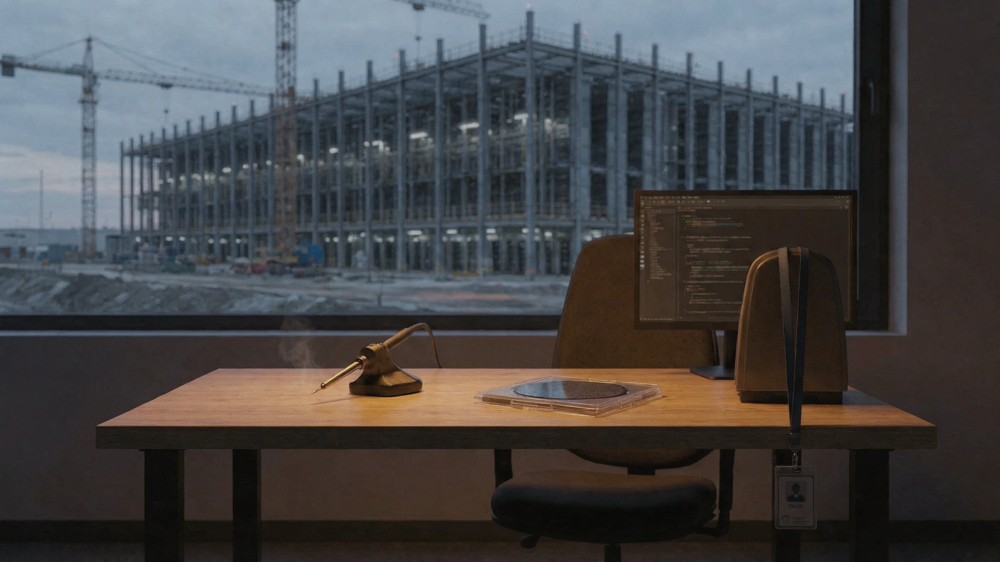

(Updated on March 27th based on new public information).
Gadi Hutt, director of product and customer engineering at Amazon’s Annapurna Labs, has left the company. [1] He is the second Annapurna leader to depart in the past 7 months. In August, Rami Sinno — director of engineering — left to join Arm Holdings. [2] Arm launched its first production CPU this week, explicitly positioned for “agentic AI infrastructure,” with Cerebras as a launch partner. [3] The engineering director of the chip AWS built left the company for the one building the CPU layer of the architecture that replaced it.
Between those two departures, three things happened. AWS announced a partnership with Cerebras to disaggregate inference, splitting prefill and decode across two vendors’ chips. [4] Peter DeSantis was elevated to lead a unified org spanning AI models, custom silicon, and quantum. [5] And Nvidia launched its own disaggregated inference rack, built around a non-GPU chip. [6] The full-stack Trainium story that Gadi and Rami spent years building lost its architecture, its org structure, and its two most visible leaders.
I worked with Gadi and his team across three companies. At AWS, where I spent six years. At Hugging Face, where Inferentia and Trainium adoption were part of the ecosystem play I led as Chief Evangelist. And at Arcee AI, where making custom silicon work in production was a practical, daily question. Gadi ran engineering and solutions architecture teams — responsible for making Annapurna’s chips work for customers, not just pitching them. The story he carried held up for a long time: Trainium is a full-stack AI chip that competes with Nvidia on training and inference. One product. One pitch.
The pivot nobody is naming.The AWS-Cerebras deal is either smart engineering or a structural concession — and the org chart tells you which one Amazon thinks it is. [7] Trainium handles prefill, the compute-bound phase. Cerebras’s WSE-3 handles decode, the memory-bandwidth-bound phase where the model generates tokens sequentially. [8] David Brown, VP of Compute & ML Services, is the named spokesperson for the new architecture — not anyone from Annapurna’s product organization. [9] When TechCrunch toured the Trainium lab in Austin in March, the guides were Kristopher King and Mark Carroll, engineering leadership. [10] Gadi was already gone. Rami was already at Arm.
The org shift behind the architecture shift.Annapurna was not originally structured as a service team. It operated as an R&D center — designing chips and delivering them to AWS service teams, with its own leadership, customer relationships, and its own external voice. That changed roughly two years ago, when Brown’s compute and ML services organization absorbed the product and go-to-market layer that sat between Annapurna’s engineering and external customers. Then, in December 2025, DeSantis was elevated to lead the unified org, reporting directly to Jassy. [5] Each step moved Annapurna closer to becoming an internal component supplier rather than an independent product shop. By the time the Cerebras deal was announced, the organizational structure that had given Gadi his role — an Annapurna that spoke for itself — no longer existed. Amazon spent a decade acquiring Annapurna. It spent the last two years digesting it.
What the deal reveals.Gadi told Time last year that “Stargate is easy to announce — let’s see it implemented first.” [11] That confidence reflected the old story: AWS builds the chips, builds the servers, builds the datacenter, runs the whole stack. The Cerebras deal breaks it — the inference pipeline now runs on someone else’s silicon for its most demanding phase.
There are 1.4 million Trainium chips deployed across three generations; Anthropic’s Claude runs on over one million of them. [12] OpenAI has committed to two gigawatts of Trainium capacity — a commitment, not yet a deployment. [13] Trainium succeeded at training and at prefill. This is not a failure of the chip.
But AWS had made a consequential bet along the way: it discontinued Inferentia entirely. [14] The rationale was sound — Trainium1 was actually better at inference than Inferentia2. Inf2 was designed as a lower-cost chip, optimized to crush inference costs as a slower but more cost-effective alternative to GPUs. When your training chip outperforms your dedicated inference chip at inference, you consolidate. AWS did.
Then the market changed beneath the consolidated architecture. Agentic AI made inference the dominant workload — generating 15x more tokens per query than conversational chat [15] — and decode became the binding constraint on cost and latency. The Reasoning Tax breaks the monolithic chip by concentrating costs on the phase the chip handles worst. [16] Trainium could win inference when it meant prefill. It could not when inference meant decode at reasoning scale. Whether killing Inferentia was yet another AWS miscalculation or the deliberate first step toward the disaggregated architecture AWS eventually built with Cerebras, the result is the same: the full-stack chip story ended.
The industry confirmed it.Nvidia shipped Dynamo, the open-source framework for orchestrating disaggregated prefill and decode, which all four major hyperscalers are adopting. [17] Then at GTC 2026, Nvidia launched the Groq 3 LPX — its first rack built around a non-GPU chip. [6] Rubin GPUs handle prefill. Groq’s SRAM-based LPUs handle decode. Same split, different partners. When Nvidia and AWS reach the same architectural conclusion in the same month — one through a reported $20 billion Groq licensing deal, the other through Cerebras — that is not two companies making independent bets. That is an industry settling a technical argument. For reasoning-heavy inference at scale, the “one chip does everything” era ended in March 2026.
For all my frustration and cursing at the Neuron SDK, I have a lot of respect for what Gadi and the Annapurna team built. The Inferentia-to-Trainium arc is the most ambitious custom silicon program any cloud provider has shipped, and the adoption numbers vindicate the engineering. [18] The departure is not a verdict on the person. It is a verdict on the narrative.
The talent is telling you where the architecture went. Rami Sinno is at Arm, building the CPU for agentic inference. Gadi’s next move will complete the signal. The people who built the full-stack chip story are the clearest evidence that it is over — not just at AWS, but everywhere.
Notes
[1] The Information,“Amazon AI Chip Product Leader Departs,”March 26, 2026. Hutt’s title was Director of Product and Customer Engineering at Annapurna Labs. He ran engineering and solutions architecture teams — author’s direct knowledge from working with Annapurna across AWS, Hugging Face, and Arcee AI.
[2] The Information [1] notes Hutt is “the second Annapurna leader to depart in the past seven months after Rami Sinno left to join Arm Holdings in August.” Sinno was director of engineering at Annapurna Labs — the same role visible in theFortune(April 2025) andTechCrunch(March 2026) lab tours.
[3] Arm Holdings,“Arm Expands Compute Platform to Silicon Products,”March 24, 2026. First production silicon in Arm’s 35-year history. 136 Neoverse V3 cores, TSMC 3nm, positioned for “agentic AI infrastructure.” Meta is lead co-developer; OpenAI, Cerebras, Cloudflare among launch partners. See also CNBC exclusive,“Arm Launches Its Own CPU, with Meta as First Customer,”March 24, 2026.
[4] AWS press release,“AWS and Cerebras Collaboration Aims to Set a New Standard for AI Inference Speed and Performance in the Cloud,”March 13, 2026.
[5] Andy Jassy,“Amazon Leadership Update,”aboutamazon.com, December 17, 2025. “I’ve asked Peter DeSantis to lead a new organization that drives our most expansive AI models (e.g. Nova—and the team we’ve called ‘AGI’), silicon development (e.g. Graviton, Trainium, Nitro), and quantum computing.” Jassy confirms DeSantis “spearheaded the acquisition of Annapurna Labs” in 2015 and “continues to manage that team.” The organizational absorption of Annapurna’s product and go-to-market layer into Brown’s compute org occurred approximately two years earlier — author’s direct knowledge from the customer and partner side, working with Annapurna across AWS, Hugging Face, and Arcee AI.
[6] Nvidia, Groq 3 LPX announced at GTC 2026, March 17, 2026. Rubin CPX GPU racks handle prefill; LPX handles decode. Based on a reported $20 billion licensing agreement with Groq — figure not confirmed by Nvidia in filings; if accurate, it would be material enough to require disclosure. Coverage:WinBuzzer, March 17, 2026. Nvidia’s own GTC materials confirm the product and disaggregated architecture.
[7] Brown, quoted in [4]: the disaggregated architecture means “each system does what it’s best at.” That is legitimate engineering. It is also a departure from the Trainium-does-everything positioning that defined Annapurna’s external narrative for years. Both readings are correct; the org changes determine which one is operative.
[8] Cerebras,“Cerebras Is Coming to AWS,”March 13, 2026. In disaggregated mode, Trainium handles prefill (computing the KV cache), sent to the WSE via EFA. The WSE exclusively performs decode. The WSE-3 houses 44 GB of on-chip SRAM — no HBM — eliminating the memory-bandwidth bottleneck that constrains conventional GPU decode.
[9] Brown was the named AWS spokesperson in the March 13 joint announcement [4], theAWS Silicon Innovation Day keynote(2023), and thePeter DeSantis/Dave Brown infrastructure keynoteat re:Invent 2025. His title evolved from VP Amazon EC2 to VP Compute & ML Services as the scope expanded. Separately, Gadi Hutt ran engineering and solutions architecture teams at Annapurna and was the external face of the chips acrossre:Invent 2022,Time(April 2025), andFortune(April 2025). His departure removes both the engineering bridge and the customer-facing narrative from Annapurna’s product layer.
[10] TechCrunch,“An Exclusive Tour of Amazon’s Trainium Lab,”March 22, 2026. Tour led by Kristopher King (lab director) and Mark Carroll (director of engineering).
[11] Gadi Hutt, quoted in Time,“Inside Amazon’s Race to Build the AI Industry’s Biggest Datacenters,”April 2, 2025.
[12] TechCrunch,March 22, 2026. Company-reported figure: “1.4 million Trainium chips deployed across all three generations, and Anthropic’s Claude runs on over one million of the Trainium2 chips deployed.”
[13] AWS-Cerebras joint press release [4], March 13, 2026. “OpenAI will consume 2 gigawatts of Trainium capacity through AWS infrastructure.” This is a commitment, not a deployment. See also Jassy’sCNBC interviewon the OpenAI-Trainium relationship.
[14] Next Platform,“With Trainium4, AWS Will Crank Up Everything But The Clocks,”December 3, 2025. “With Trainium2...AWS moved on to the NeuronCore-v3 architecture and stopped making Inferentia chips because inference started becoming more like training.” There is no Inferentia3. Practitioner context: Trainium1 was already outperforming Inferentia2 at inference. Inf2 was designed as a lower-cost, lower-performance chip optimized to reduce inference costs — a slower but cheaper alternative to GPUs, not a faster one. Consolidating around Trainium was the rational engineering decision given the performance gap. The question the Cerebras deal answers is whichkindof inference Trainium wins: prefill (yes), decode at reasoning scale (no). Author’s direct knowledge.
[15] Cerebras [8], March 13, 2026. “Agentic coding generates approximately 15x more tokens per query.” Vendor-published figure; directionally consistent withNvidia Dynamo documentationdescribing the same workload shift.
[16] Julien Simon,“AWS Built Its Own AI Chip. Now It Needs Someone Else’s,”The AI Realist, March 15, 2026. Introduces the Reasoning Tax framework, the Platform Absorption Test, and the three-ecosystem convergence (AWS-Cerebras, Nvidia-Groq, Huawei Ascend 950). The present note is a personnel coda to that structural analysis.
[17] Nvidia,“NVIDIA Enters Production With Dynamo, the Broadly Adopted Inference Operating System for AI Factories,”investor relations press release, March 16, 2026. Dynamo 1.0 is open-source, production-grade, integrated by AWS, Microsoft Azure, Google Cloud, and OCI. See alsoNvidia developer blogandglossary entry on disaggregated serving.
[18] TechCrunch [10], March 22, 2026. Apple’s director of AI publicly described Apple’s use of Graviton, Inferentia, and Trainium at an AWS event. Anthropic and OpenAI commitments sourced in [12] and [13].